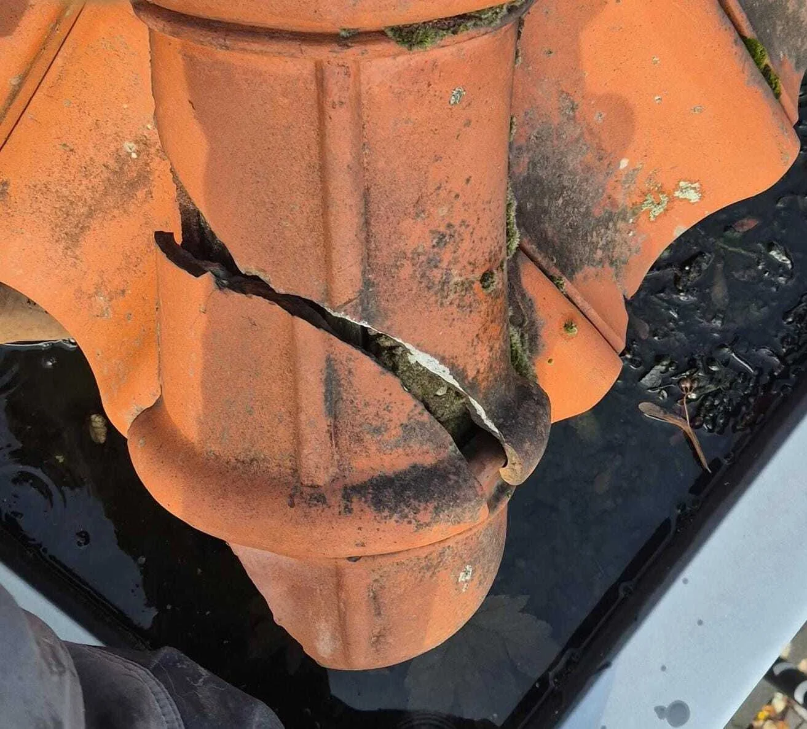

1
Grondige dakinspectie
We controleren het volledige dak, inclusief kwetsbare aansluitingen en afwatering.
Een daklekkage veroorzaakt meer schade dan u denkt. Vocht, schimmel en houtrot kunnen zich snel verspreiden.
Daklekkages Opgelost is gespecialiseerd in het opsporen én duurzaam verhelpen van daklekkages bij zowel platte als schuine daken — ook bij spoed.
Daarnaast kunt u bij ons terecht voor allround dakwerk zoals dakpannen vervangen, isoleren, renovaties, lood- en zinkwerk en schoorsteenwerk.
De zichtbare schade zit zelden op de plek waar het probleem ontstaat. Daarom pakken we daklekkages bij de bron aan.
We controleren het volledige dak, inclusief kwetsbare aansluitingen en afwatering.
We achterhalen de échte oorzaak van de daklekkage, zonder symptoombestrijding.
U ontvangt duidelijke uitleg en een transparante kostenindicatie vooraf.
We controleren of alles 100% dicht is en ronden netjes af.
We controleren het hele dak, inclusief kwetsbare details.
We vinden de bron van het water en verklaren het lekgedrag.
U krijgt een plan van aanpak + kostenindicatie vóór we starten.
We verhelpen het lek en controleren of alles volledig dicht is.
De kosten hangen af van een aantal praktische factoren:
Wij geven altijd vooraf duidelijkheid. In sommige gevallen wordt daklekkage gedeeltelijk vergoed door uw verzekering.
Laat het professioneel controleren en voorkom onnodige schade. Vraag vrijblijvend een gratis inspectie aan.
Gratis dakinspectie aanvragen →
U wilt zekerheid en een oplossing die écht werkt. Daarom focussen we op specialisme, duidelijke communicatie en nette oplevering.
Wij doen één ding extreem goed: daklekkages opsporen en duurzaam oplossen.
Geen giswerk, maar een gerichte diagnose en een oplossing die standhoudt.
U weet vooraf waar u aan toe bent. Geen verrassingen achteraf.
Naast daklekkages pakken we ook complete dakwerkzaamheden op — van herstel tot renovatie — met dezelfde focus op kwaliteit en duidelijke communicatie.
Woont u in Gelderland of Noord-Brabant? Dan zijn we vaak snel ter plaatse voor inspectie en herstel.
Uiteraard zijn we ook actief in de rest van Nederland.
Twijfel? Laat het professioneel controleren en voorkom vervolgschade.

Eén aanspreekpunt, snelle service, vakkundige uitvoering.
Meest actief in:
Ook actief in o.a.:

De meest logische ingang als iemand wil begrijpen waar lekkage vandaan komt.
Lees meer →
Goed voor bezoekers die al reparaties hebben gehad maar nog geen echte oplossing.
Lees meer →
Helpt bezoekers inschatten wanneer signalen serieus zijn en inspectie slim is.
Lees meer →Klaar om zekerheid te krijgen? Vraag vrijblijvend een inspectie aan of bel direct bij spoed.
Bij Daklekkages Opgelost zetten wij ons iedere dag in om tot het uiterste te gaan voor onze klanten. Daarbij hebben wij al meerdere mijlpalen bereikt. Een paar feiten op een rij!